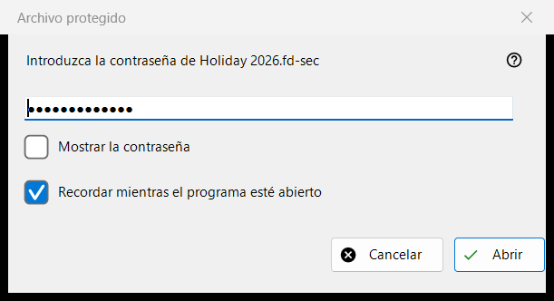
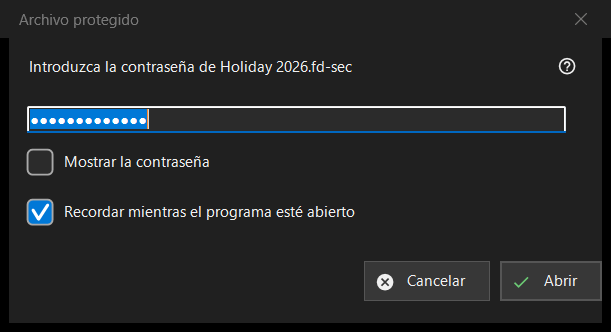

Archivo protegido
Para qué sirve
Pide la contraseña de un contenedor protegido, un archivo .fd-sec, cuando llega a la pantalla. Se abre cuando pulsa Intro o hace clic en el archivo bloqueado, y por sí sola cuando se detiene en un archivo así; una presentación omite los archivos protegidos y los cuenta. El contenido se muestra desde la memoria: nada descifrado se escribe en el disco. Solo en la versión moderna del programa.


En este orden
- Escriba la contraseña; aparece oculta.
- Active «Recordar mientras el programa esté abierto» si otros contenedores usan la misma contraseña.
- Pulse «Abrir» (Intro).
- «Cancelar» (Esc) deja el archivo bloqueado.
Los elementos
La contraseña
La petición nombra el archivo. «Mostrar la contraseña» está desactivado al principio. La contraseña se usa exactamente como se escribe y se comprueba fuera del hilo principal, de modo que el programa sigue respondiendo mientras se ejecuta la lenta derivación de la clave; nunca se escribe en el registro, en un archivo ni en el almacén de Windows.
Recordar mientras el programa esté abierto
Activado de forma predeterminada. Mantiene la contraseña en memoria hasta que se cierra el programa, y solo después de que un contenedor se haya abierto realmente con ella; el programa la prueba entonces en silencio con los contenedores siguientes y solo pregunta cuando no encaja.
Una negativa y una contraseña vacía
Después de un intento fallido la ventana vuelve con «No se abrió: la contraseña puede ser incorrecta, el archivo puede no haber sido nunca un contenedor, o fue alterado.» Estos casos se ven igual a propósito: una clave incorrecta y un byte cambiado no se pueden distinguir. Un contenedor dañado o no admitido recibe su propio mensaje y ninguna ventana de contraseña. Una contraseña vacía se acepta, pero la primera pulsación de Intro muestra «Una contraseña vacía no es protección: ese archivo solo queda oculto a una mirada superficial. Pulse de nuevo para abrirlo.» y la segunda pulsación abre el archivo.
Cancelar
Cancelar, Esc y la casilla de cierre son un mismo camino y no cambian nada. El archivo muestra «Hace falta una contraseña - pulse Intro o haga clic en el archivo» y el programa no vuelve a pedirla mientras esa carpeta siga abierta. Intro o un clic en el archivo la piden de nuevo.